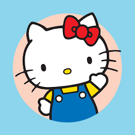

Bienvenid@ a Hello Kitty Cool, aquí encontrarás todo tipo de cosas acerca de nuestro personaje
favorito ¡Hello Kitty!

Un poco de la historia de Hello kitty :3
Es un personaje ficticio creado por la diseñadora Yuko Shimizu en 1974. Lo hizo cuando trabajaba para
la compañía japonesa Sanrio. Después de poco tiempo Hello Kitty se convirtió en el producto estrella de la marca.
Tras el primer diseño realizado por Shimizu, Yuko Yamaguchi se convirtió en la diseñadora oficial de Hello Kitty.
Con respecto al hecho de que Hello Kitty no tiene boca, se explicaría por la bien conocida inclinación artística de
los dibujantes japoneses de darle originales peculiaridades a sus creaciones.